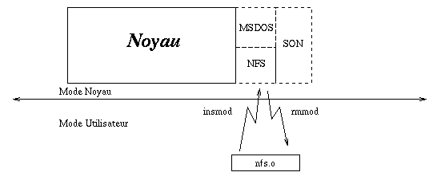
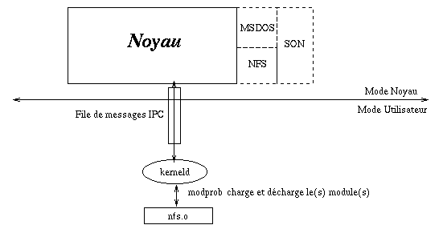

Les modules chargeables
Les modules chargeables
Les modules chargeables
Les modules chargeablesArticle pour l'Echo de Linux (Juillet 1996)
Eric Dumas (dumas@freenix.fr)Les modules chargeables, permettent de joindre l'utile à l'agréable en ayant un noyau modulaire qui charge à la demande ce dont il a besoin. De cette manière, le gain de ressources est non négligeable.
On peut considérer qu'à un instant donné, on n'utilise pas tous les gestionnaires de périphériques inclus dans le noyau. Donc, la place mémoire utilisée est inutilement gâchée. Le principe des modules chargeables est de permettre au noyau de charger une partie de son code lorsque l'un des utilisateur en a besoin.
On peut shématiser le chargement/déchargement d'un module comme cela : 
Dans cette image, le noyau est composé d'une partie
En fait, deux systèmes cohabitent sous Linux : un chargement manuel, et un système de chargement automatique récement introduit dans Linux. Nous en reparlerons plus tard.
Dans cet article, j'utiliserai comme exemple le module NFS, mais
tout ce qui va être raconté marche avec un autre module (audio, etc).
Le noyau linux utilisé est un 2.0.x et la version des modules est
la 2.0.0. Vous pouvez récupérer les modules sur la page officielle
http://www.pi.se/blox/modules/index.html
ou bien dans l'arborescence des sources (v2.0).
La première technique est manuelle : il faut charger ou décharger les
modules à la main. La deuxième est automatique, grâce à l'utilisation
d'un démon spécialisé qui est l'esclave du noyau et qui charge et
décharge les modules pour lui.
En fait, la version 1.2 de Linux n'offrait
que la possibilité d'un chargement manuel qui est limité au super-utilisateur
de la machine et qui est assez lourd à manipuler. Au fil du développement
de la version 2.0, un nouveau système implémenté par Bjorn Ekwall permit
d'éffectuer un chargement dynamique et automatique des modules.
Lors de la compilation, il est nécessaire de spécifier certaines options :
Le chargement manuel est basé sur trois commandes~:
Le système de chargement automatique de modules permet
de réduire au minimum la taille de son noyau. Le principe de fonctionnement
est particulièrement simple : un démon en mode utilisateur est à
l'écoute des ordres du noyau (via une file de message de type IPC
Système V). Lorsque un processus essaye d'accéder à une ressource
système (via un appel système open, etc...), le noyau envoie l'ordre
de chargement du module à kerneld. Une fois le message reçu,
kerneld exécute un modprobe pour charger les modules nécesaires :

Par contre, lors de la compilation du noyau, il est nécessaire d'y
mettre au moins le support pour permettre l'amoçage de la machine
et le montage de la racine de votre système de fichier
(par exemple, support IDE + ext2fs). Vous pouvez y mettre tout
le reste en module (carte son, systèmes de fichiers, carte SCSI, etc).
Pour réaliser la mise en place du système de chargement de modules, il est
nécessaire d'effectuer certaines modifications au niveau de votre
configuration. En effet, il est nécessaire lors de l'amorçage de la
machine de lancer le démon kerneld et de réaliser une
espèce de liste des dépendances des modules : certains modules
ne peuvent être lancés avant que d'autres ne le soient.
Dans un premier temps, il faut créer le fichier
/etc/rc.d/rc.modules dans lequel, vous y mettez :
Il peut arriver qu'il soit nécessaire de configurer un dernier
fichier : le fichier /etc/conf.modules. Ce fichier
contient les chemins où se trouvent les modules devant être chargés
et ensuite des alias pour les modules. Si vous n'avez pas
ce fichier, vous pouvez le créer avec :
Vous pouvez consulter ces références pour plus d'information :
2- Compilation
La première question que l'on peut se poser, c'est :
« Pourquoi deux techniques ? »
gandalf# make config
<...>
*
* Loadable module support
*
Enable loadable module support (CONFIG_MODULES) [Y/n/?]
Set version information on all symbols for modules (CONFIG_MODVERSIONS) [N/y/?]
Kernel daemon support (e.g. autoload of modules) (CONFIG_KERNELD) [Y/n/?]
Voici le détail de ces trois options :
Une fois fois configuré, il vous suffit de lancer la compilation ainsi
que l'installation :
gandalf# make dep ; make clean
gandalf# make zImage
gandalf# make modules ; make modules_install
Une fois ces opérations effectuées, les modules se trouvent alors dans
le répertoire /lib/modules/x.y.z où x.y.z correspond
au numéro de version du noyau.
Il ne nous reste plus à voir que le chargement...
3- Première méthode : à la main
Leur utilisation oblige d'être en super-utilisateur. voici un
exemple d'utilisation :
gandalf# insmod nfs.o
gandalf# lsmod
Module: #pages: Used by:
nfs 12 4
gandalf# mount -t nfs /truc /mnt
gandalf# lsmod
Module: #pages: Used by:
nfs 12 5
gandalf# cd /mnt
...
gandalf# cd /
gandalf# umount /mnt
Module: #pages: Used by:
nfs 12 4
gandalf# ps axu | grep nfs
root 5535 0.0 0.0 0 0 q2 SW 17:15 0:00 (nfsiod)
root 5536 0.0 0.0 0 0 q2 SW 17:15 0:00 (nfsiod)
root 5537 0.0 0.0 0 0 q2 SW 17:15 0:00 (nfsiod)
root 5538 0.0 0.0 0 0 q2 SW 17:15 0:00 (nfsiod)
root 5557 0.0 0.4 864 300 q2 S 17:16 0:00 grep nfs
Gandalf(gandalf)--> kill -9 5535 5536 5537 5538
gandalf# lsmod
gandalf# rmmod nfs.o
Il est nécessaire de "killer" les 4 démons nfsiod car ils sont
lancés dès que NFS est activé. Comme vous pouvez le voir, ces opérations
deviennent relativement pénibles. C'est pour cette raison que le système
de chargement automatique a été crée.
4- Automatisation : kerneld
4.1 - Introduction
4.2 - Conseils pour la compilation du noyau
4.3 - Mise en place
# Modules
#
# Create a generic link to the modules for the current kernel
#
# You can have generic symbolic links in /lib/modules/boot
# if you create links to: "../current/subsystem/module.o"
#
ln -sf /lib/modules/`uname -r` /lib/modules/current
if [ \! -r /lib/modules/current/modules.dep ]
then
echo "Creating module dependencies"
/sbin/depmod -a
fi
#
# Load the boot modules
#
if [ -x /sbin/kerneld ]
then
if find /lib/modules/boot -type f -o type l > /dev/null 2>&1
then
echo "Loading boot-time modules"
/sbin/modprobe -a -t boot \*
fi
else
echo "Loading modules"
/sbin/modprobe -a \*
fi
#
# If you have any extra kerneld-type daemons, start them here
#
if [ -x /sbin/kdsound ]
then
echo "Starting sound daemon"
/sbin/kdsound &
fi
Cela permet de générer la dépendance de vos modules à chaque
fois que vous amorcez votre machine. Ensuite, dans le fichier
/etc/rd.d/rc.S (peut dépendre de votre distribution...),
il convient de rajouter :
# Start update.
/sbin/update &
# *** A RAJOUTER ***
# Now, start kerneld as soon as possible, so that any disk
# driver modules can be loaded "automagically"
if [ -x /sbin/kerneld ]
then
echo "kerneld running"
/sbin/kerneld
fi
...
# Looks like we have to create this.
cat /dev/null > /var/adm/utmp
# Do a lot of things...
if [ -f /etc/rc.d/rc.modules ]; then
/etc/rc.d/rc.modules
fi
Une fois ces modifications effectuées et la machine réamorcée, tout
doit être en place. Si kerneld permet de charger automatiquement
les modules, il permet également de les décharger au bout d'un certain
temps de nom utilisation. Par défaut, si aucun processus n'accède
au module pendant plus de 30 secondes, il est automatiquement
déchargé. Il est possible de modifier cette valeur en rajoutant
le paramètre delay=Nb_Secondes à kerneld où
Nb_Secondes est le délai en nombre de secondes.
4.4 - Le fichier /etc/conf.modules
gandalf# /sbin/modprobe -c | grep -v '^path' >/etc/conf.modules
Il peut arriver que lors du premier amorçage vous ayez ce
message :
Cannot locate module for net-pf-3
Cannot locate module for net-pf-4
Cannot locate module for net-pf-5
Pas de panique ! Ce message n'est pas méchant et pour
ne plus l'avoir, rajouter dans le fichier /etc/conf.modules
alias net-pf-3 off
alias net-pf-4 off
alias net-pf-5 off
Il peut arriver que certains périphérifériques aient
besoin de certains paramètres particulier. Consultez le
document Kernel HowTo.
5- Références